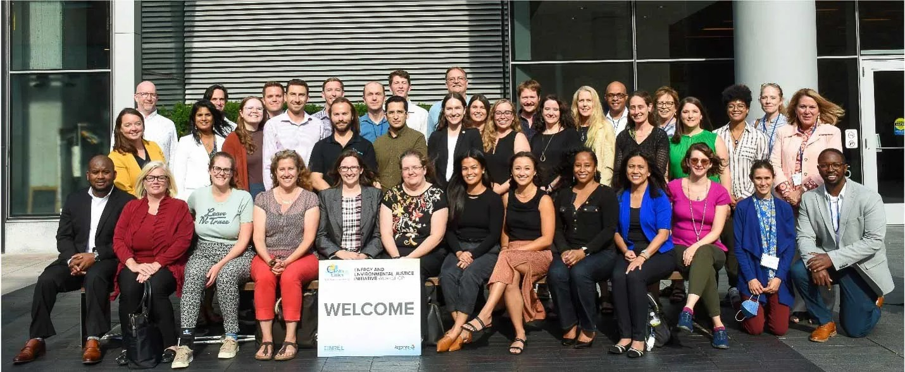

Projects
Nationwide Projects
Enhancing Behavioral Traffic Safety Efforts to Engage Underserved Communities
Horizon 54, in partnership with Fors Marsh, is conducting research on how State Highway Safety Offices (SHSOs) and other safety organizations can achieve effective engagement with underserved communities through equity informed communication methods and outreach efforts. As part of the research project, Horizon 54 will develop a noteworthy practices guide for SHSOs and other traffic safety organizations, as well as conduct a workshop with representatives of SHSOs and other highway safety organizations to present key research findings.
Client: Transportation Research Board
Prime: Fors Marsh
Service: Research
Clean Cities Coalition
Clean Cities coalitions strengthen the nation’s environment, energy security, and economic prosperity by working locally to advance affordable, efficient, and clean transportation fuels, energy efficient mobility systems, and other fuel-saving practices. Horizon 54 is partnering with the World Resources Institute to support community based organizations in the coalition to advance energy and environmental justice (EEJ) goals. Horizon 54 offers expertise in outreach, education and training to ensure that underserved and overburdened communities benefit from projects that improve air quality
Client: U.S. Department of Energy
Prime: World Resources Institute
Service: Outreach, Engagement, and Training
Analysis of Public Transportation Health Impacts and Benefits (TCRP J-11, Task 43)
While public transportation provides a variety of health benefits, public transportation agencies need better framing and more effective communication tools regarding these benefits to help residents make healthier travel choices. Horizon 54 partnered with Steer Davies and Gleave to develop an evidence-informed resource for public transportation agencies and their partners that focuses on the health benefits of public transportation. The resource presents the best available research on the health benefits of public transportation; addresses equity considerations and barriers regarding the health benefits of public transportation; identifies improvements that public transportation agencies and their partners can implement to further increase health benefits and mitigate the adverse health effects of public transportation; identifies data, methods, and potential metrics that can be used to measure and track benefits; and finally, provides actionable communication tools for public transportation agencies and their partners.
Client: Transportation Research Board
Prime: Steer Davies & Gleave Inc
Service: Research
Tools to Integrate Equity into Active Transportation and Safety Investments (NCHRP 08-150)
Sponsored by the Transportation Research Board, Horizon 54 is developing a tool to help state departments of transportation (DOTs) ensure that traditionally underserved communities benefit from safety investments and active transportation plans. This tool will be informed by research on how populations have been racialized by societal structures and institutions, and will incorporate methods to engage community members and other stakeholders in decision-making. Finally, this research will evaluate how the effects of past decisions can inform future decisions to improve mobility outcomes.
Client: Transportation Research Board
Prime: Metro Analytics
Service: Research
Assessing and Addressing Equity of Access to Essential Goods and Services (NCHRP 08-159)
Inequities by race and income were highlighted during the Covid-19 pandemic, particularly considering access to economic opportunities and essential services. State Department of Transportation (DOTs) officials seek to gain a stronger understanding of how accessibility differs by demographic groups, and improve equity in access. Horizon 54 is developing a guide to help DOTs identify accessibility challenges in underserved populations, highlight methods to measure accessibility performance through an equity lens; provide direction on implementation; and suggest strategies for incorporating accessibility and equity into transportation planning.
Client: Transportation Research Board
Prime: University of Texas
Service: Research
Institutionalizing the Safe System Approach in Transportation Planning and Programming (NCHRP 08-171)
The Safe System approach is part of an international effort to protect roadway users, and reduce roadway fatalities and serious injuries. Commitment and collective action by stakeholders such as planners, roadway system designers and managers, roadway users, law enforcement, and vehicle manufacturers, contributes to a positive safety culture. Horizon 54 and Fehr and Peers are developing a practical toolkit for State Departments of Transportation that highlights proven, innovative, and emerging strategies to institutionalize the Safe System approach throughout planning and programming processes.
Client: Transportation Research Board
Prime: Fehr and Peers
Service: Focus groups, Toolkit, Research
Traffic Safety Culture Research Roadmap (NCHRP 17-96)
With more states and localities adopting a vision of zero fatalities and serious injuries, increasingly greater attention is being given to communication, coordination, collaboration, leveraging resources, and applying a safe systems approach to traffic safety. This requires a culture shift– both among road users and traffic safety partner agencies, tied to education, engineering, enforcement, and emergency services. Horizon 54, in partnership with the University of North Carolina, Chapel Hill, produced a Traffic Safety Culture roadmap to indicate why improving traffic safety is critical, and to identify practices, tactics, techniques, and tools that can be implemented by safety partner agencies
Client: Transportation Research Board
Prime: University of North Carolina, Chapel Hill
Service: Training, Research, Outreach and Engagement
Lessons Learned from Covid-19: Public Transportation As a Community Lifeline (TCRP H-60)
Community lifelines, including energy, health and medical services, food, water, waste management, communications, and essential mobility, play a crucial role in coordinating crisis response and recovery. Without effective lifelines, community resilience suffers. Horizon 54 and WSP USA Inc. are investigating how low-income communities and communities of color experienced compounding disparities during the Covid-19 pandemic due to reduced mobility from transit service cuts and increased vulnerability to contracting the virus. The findings of this study aim to assist public transportation providers in understanding the impacts of modifying transit services during crises.
Client: Transportation Research Board
Prime: WSP USA Inc.
Service: Research
Strategies to Improve Pedestrian Safety at Night (NCHRP 17-97)
Over the past decade, there has been a significant increase in nighttime pedestrian fatalities. Studies show that nighttime pedestrian collisions are particularly deadly, with an 83% chance of being fatal at intersections lacking street lighting, and a 54% chance at those with street lighting. Even when a collision is non-fatal, nighttime collisions often result in more severe injuries compared to daytime incidents. Horizon 54 and Toole Design Group are collaborating on a research project on the root causes of nighttime pedestrian crashes, and evaluating the effectiveness of current and emerging safety strategies. The research will explore economically viable solutions to reduce crashes, and will be used to develop guidance for their implementation. Findings will provide valuable support for transportation agencies in making data-driven decisions to enhance pedestrian safety. Insights will be presented in the form of a diverse range of strategies, allowing agencies to select from a menu of options tailored to their specific needs and circumstances.
Client: Transportation Research Board
Prime: Toole Design Group, LLC
Service: Research
Guide for Intersection Control Evaluation (NCHRP 17-98)
A variety of intersection control evaluation processes and metrics are used by highway agencies for evaluating safety, operational, multimodal, environmental, and right-of-way considerations, in addition to cost impacts. However, there is no widely accepted procedure or guide for evaluating new intersections or modifications to an intersection. Horizon 54 and Kittelson & Associates developed a guide that incorporates rational processes, objective performance metrics, and appropriate tools to provide a consistent and objective intersection control evaluation.
Client: Transportation Research Board
Prime: Kittelson & Associates, Inc.
Service: Research

E-scooter Safety: Issues and Solutions (BTSCRP-10)
Sponsored by the Behavioral Traffic Safety Cooperative Research Program (BTSCRP), Horizon 54 in partnership with the University of North Carolina Highway Safety Research Center (UNC HSRC) conducted a study to advance multimodal road safety. The research explores emerging safety risks due to the growing use of e-scooters across the country, and developed evidence-based guidance, tools, policy options, and educational materials to mitigate those risks. Through multiple methods of data collection and analysis, including a literature review, survey, interviews, and field sites this study offers insights into e-scooter current state of use, injury information, and existing safety management practices.
Client: Transportation Research Board
Prime: UNC Highway Safety Research Center (UNC HSRC)
Service: Policy Analysis, Survey, and Research
Equity in Bicycle and Pedestrian Course Development
The Federal Highway Administration provides training courses to agencies designated as Pedestrian and Bicyclist Safety Focus States and Planning Organizations. Horizon 54 co-designed a course on community safety and mobility needs, including risk factors associated with pedestrian and bicyclist crashes, injuries and fatalities, factors that influence an individual’s perception of safety and wellbeing, and the range of obstacles to safe travel. The course was co-facilitated by Equitable Cities as part of the Equity in Bicycle and Pedestrian Safety Trainings.
Client: Federal Highway Administration
Service: Course Development
National Pedestrian and Bicycle Information Center
As a national leader in pedestrian and bicycle research and resources, the Pedestrian and Bicycle Information Center (PBIC) develops and shares resources vital to advancing mobility, access, equity, and safety for pedestrians and bicyclists. Horizon 54 (formerly known as Equitable Cities) contributes technical assistance and thought leadership to the center as a member of their core team of partners. This involves developing, synthesizing, promoting and distributing accurate and current bicycling and walking information. PBIC is supported by the Federal Highway Administration (FHWA) and housed within the UNC Highway Safety Research Center in Chapel Hill, NC.
Client: Federal Highway Administration
Prime: University of North Carolina (UNC) Highway Safety Research Center
Service: Technical Assistance, Workshops, Outreach, and Engagement
Clean Cities Energy and Environmental Justice Initiative
The National Renewable Energy Laboratory (NREL) is leading a pilot for selected Clean Cities Coalitions to engage in activities that transform communities and equitably grow the national impact of the U.S. Department of Energy’s efforts. Horizon 54 (formerly known as Equitable Cities) provides technical assistance, capacity building support, training, facilitation, templates, resources, and targeted outreach to educate NREL staff, subcontractors, and Clean Cities coalitions.
Client: National Renewable Energy Laboratory (NREL)
Prime: University of North Carolina (UNC) Highway Safety Research Center
Service: Workshops , Technical Assistance, Capacity Building , Outreach, and Engagement
